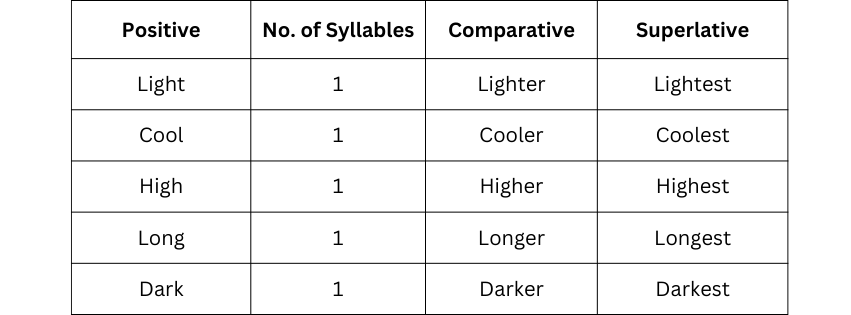
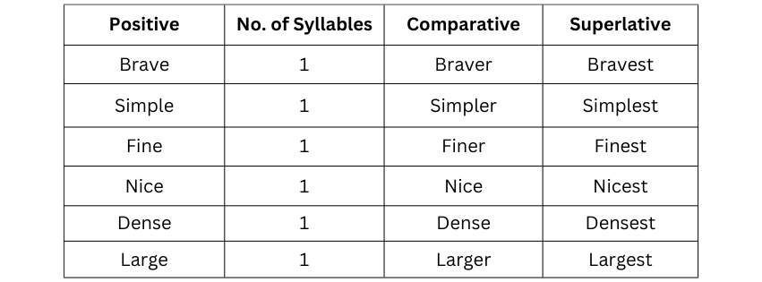
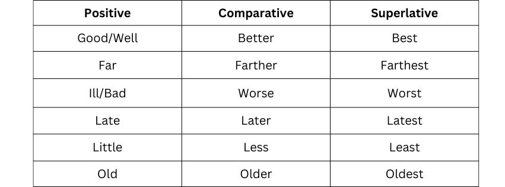

DISCUSSION
● Monosyllabic adjectives in which there is a consonant or two vowels before the last consonant we must add ‘-er’ and ‘-est’ in the comparative and the superlative degree respectively. Let us look at the table below:
● We must add ‘r’ and ‘st’ in the Adjectives ending in ‘e’
● IRREGULAR ADJECTIVES
 Overview of the Grammar Topic:
Comparison of adjectives happens in three forms.:
Positive, Comparative and Superlative. We can only consider the comparison of only
quality while using the Comparative or Superlative adjectives. There are mainly six
ways in which different adjectives form their comparatives and superlatives. We need
to use the term ‘than’ while using the comparative degree adjectives.